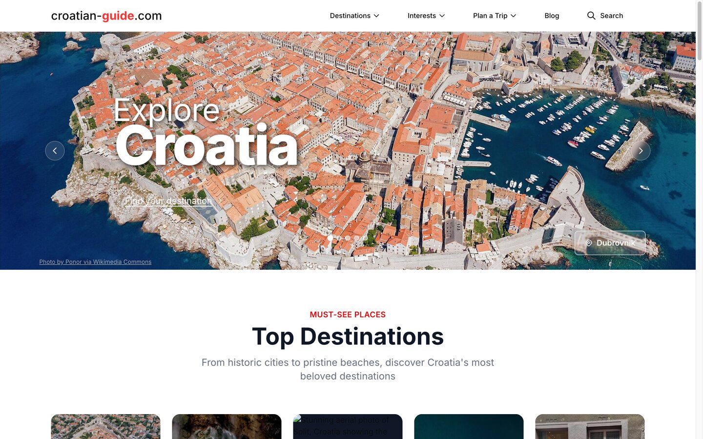
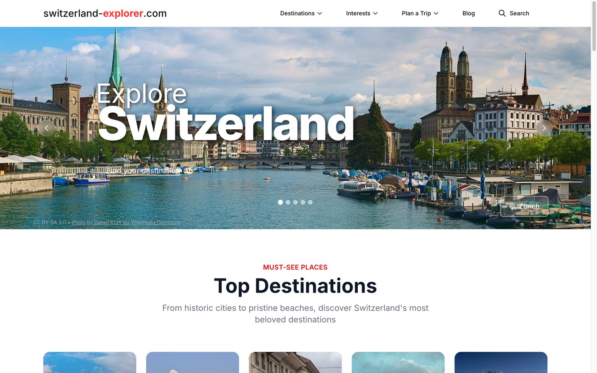
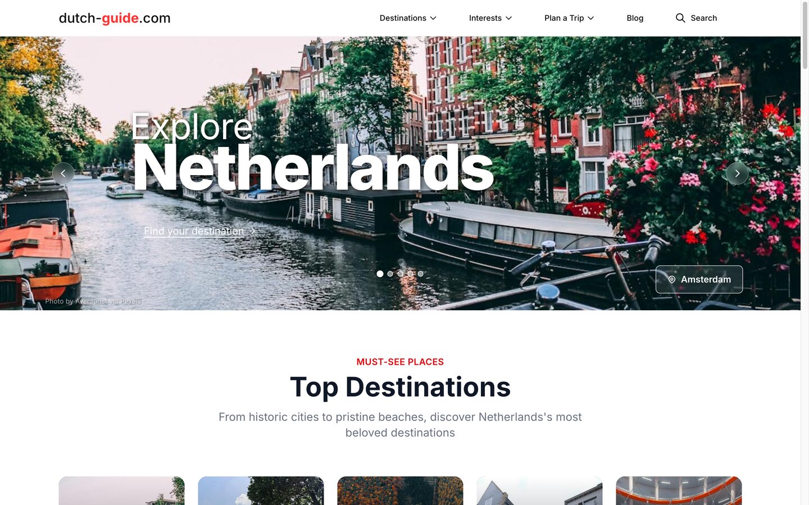
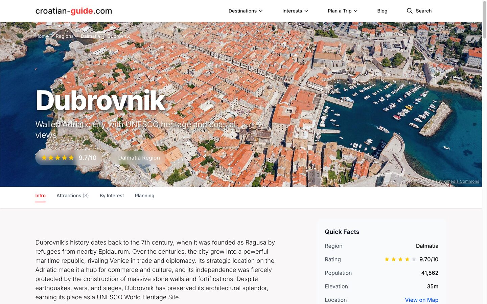
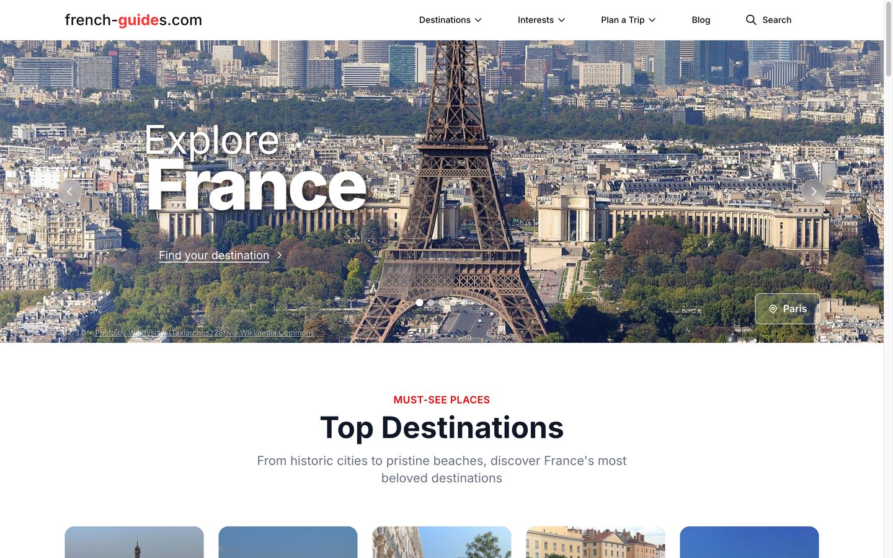

Nine branded travel sites - from Croatia and Italy to France, Austria and Morocco - running on one codebase, with an AI pipeline that researches and writes every destination, attraction and article. A new country is a config file, not a fork.





A travel guide has the same shape everywhere: a country, its regions, the places worth visiting, the things to see in them. So the site gets built once. Country, branding, currency, copy and content become data - not a separate codebase per site.
The usual way to launch a second country is to copy the first and change some text. Then the two drift. A fix lands in one and not the other, and within a year you're maintaining four codebases that used to be one.
Here there is exactly one application. What makes Croatia look like Croatia and Switzerland look like Switzerland lives in configuration and data, so a fix ships to every site at once and a new market adds nothing to maintain.
No page is typed by hand, and none is invented from thin air. The pipeline finds real places on the open web, then writes them up against a fixed schema so every field lands exactly where the database expects it.
Web search finds the real destinations and attractions for a country. A duplicate check compares each candidate against what's already stored, so the pipeline never re-adds a place it already knows.
A schema-bound model turns each place into a structured record, not free text. Every field is validated against the same Pydantic schema the database is shaped by - a malformed answer is retried, not published.
Opening hours, admission fees, how to get there. A separate research pass fills in the practical detail a traveller actually plans around, instead of leaving it to generic prose.
Each attraction is tagged into interest categories - castles, beaches, history and heritage - so the same place surfaces in every way a visitor might go looking for it.
Articles, destinations and attractions are cross-linked automatically, and common questions get their own FAQ section - useful for a reader skimming, and legible to a search engine.
Before a country goes live, an automated check audits content counts, SEO metadata, images and internal links. A site launches when it's actually complete, not when someone hopes it is.
Generation runs on a fast, low-cost model with an automatic fallback chain - if the primary provider stumbles, the next one picks up the same request rather than dropping the job. Because every response has to satisfy a strict schema before it's accepted, speed never comes at the cost of a broken record reaching the database. The schema definitions are treated as the contract between the AI and the app, and are deliberately hard to change by accident.
Each site looks like it was built for one country. Underneath, they share everything that matters and differ only in data.
Domain, branding, SEO metadata, currency, timezone, analytics and the homepage and legal copy all live in one per-country config, next to that country's content tree. Launching a new market means adding a config and generating its content - not touching the application.
Each live site is seeded one country at a time and runs its own database and its own application process. Sites stay isolated, and any one of them is simple to reason about on its own.
Continuous deployment hashes the shared code and each country's data separately, then ships only the countries that actually changed. Editing Croatia's content never redeploys Switzerland, and a docs-only commit deploys nothing at all - the pipeline does the least work that's correct.
The web server keeps its version-controlled base config separate from the live certificates, so an automated deploy can never overwrite an SSL renewal and knock a site offline.
Publishing programmatic pages at volume is where SEO usually falls apart: duplicate URLs, thin structured data, pages that render blank without JavaScript. This was hardened for exactly that.
Destinations, attractions, articles and FAQs each ship the right schema.org type - TouristAttraction, Place, FAQPage, BreadcrumbList - so a search engine reads them as places and answers, not just paragraphs of text.
HTTPS, www and trailing slashes are normalized to a single canonical address, and filtered or paginated views are told not to index. No page ends up competing with itself for the same search.
React pages are server-rendered, so a crawler - or a visitor on a slow phone - gets full HTML immediately. Per-site sitemaps are generated and kept current as content grows.
Every number here is a page you can open. Each site runs the same platform on its own domain, with its own content.
Country Guides is a platform play: build the engine once, launch a new market from a config file. If you publish content at volume - locations, listings, catalogues - that's the pattern we build.
We're fully booked right now and not taking on new projects. Say hello at tihomir.jauk@lumiverse.hr and we'll reach out when we reopen.